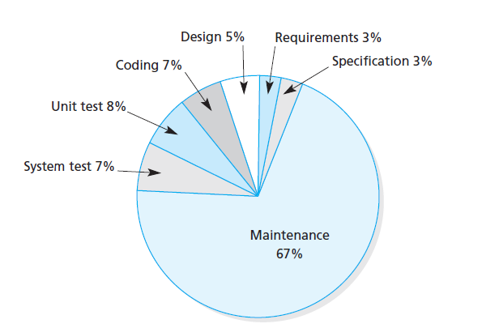

Test Driven Development
Test, code, refactor, repeat
Hi, my name is Dimi.
Developer
Ordina Belgium
https://github.com/DimiDeKerf
Test
What is a test?
Process insuring the quality, performance and reliability of something is in place before bringing it into widespread use.
Test
- Requirements are satisfied
- Responds correctly to all input (happy and unhappy flows)
- Performance
Test Driven Development
Software development process relying on a short development cycle. Requirements are translated in tests, then the software is improved to only pass the new tests.
Red
Write a test that fails, verifying a specific case of the software.
Green
Implement the minimal amount of code in order to only pass the test.
Refactor
Refactor code, while making sure all tests still pass.
Test cycle

Red - Green - Refactor
Test Driven Development
Development costs
Around 65% of costs goes to maintenance
Why maintenance is so expensive?
- Code entropy
- Isolated ownership
- No validation on code
Legacy code
Code inherited from somebody else or older version of software
Legacy code
Usually no validation in place, making it hard to perform changes without breaking anything.
How can TDD help out?
Business benefits
- Verify requirements by defined tests
- Test failures prevents features from not working anymore with new version
- Lower maintenance costs
Developer benefits
- Design first mentality
- Avoid over-engineering
- Increase momentum
- Confidence to refactor
- Tests provide documentation for unit's API
Customer benefits
- Focus on real needs of customer
- Fast improvement cycle
Testing applications
Different ways of testing applications
- Unit testing
- Integration testing
- Acceptance testing
Unit tests
Small, fast tests. Part of the development cycle.
Integration tests
Verify behavior between different units. Slower than unit tests
Acceptance tests
Test from the user point of view. Expensive tests to run
Testing pyramid

Unit tests
- Tests a single unit, class
- No IO, network calls,...
- Mock dependencies
Mocking
Remove dependencies to create a controlled environment for our unit.
Mocks will have a predefined behavior.
Test API
Write unit tests for your public methods. The private methods should be hit by calling the public ones.
Code coverage
Metrics to determine the number of code lines that are validated by tests.
Code coverage

Testing frameworks
Jasmine
Behavior-driven development framework.

Mocha
Alternative testing framework. Relative to JUnit.

Karma
Test runner. Runs your tests in multiple browsers
Jest
Test framework developed by Facebook. Combination of both a testing framework and runner.

Writing tests
Test file
Test are usually found in *.spec.ts or *.test.ts files
Test structure
describe('My awesome test', () => {
it('passes everytime', () => {
expect(true).toBe(true);
});
});
Test suite
Collection of several related tests.
describe
Describes high level summary of test suite. Describe blocks can be nested.
it
Describes a test spec.
Usually has one expectation.
Setup
describe('My awesome test', () => {
beforeAll(() => {
// Runs before test suit
});
beforeEach(() => {
// Runs before every test
});
it('passes everytime', () => {
expect(true).toBe(true);
});
});
Teardown
Cleanup code, so test can run independently of eachother.
describe('My awesome test', () => {
afterEach(() => {
// Runs after every test
});
afterAll(() => {
// Runs after test suit
});
it('passes everytime', () => {
expect(true).toBe(true);
});
});
Verification
Verify if result matches expectation.
expect(true).toBe(true);
expect(service.getName()).toBe('John');
expect({}).toBeDefined();
expect(null).toBeNull();
Mock dependencies
class Calculator {
sum(first, second) {
return first + second;
}
}
class MyComponent {
constructor(private calculator: Calculator) {}
sum(first, second) {
return this.calculator.sum(first, second);
}
}
Mock dependencies
describe('MyComponent', () => {
let myComponent;
let calculatorMock;
beforeEach(() => {
calculatorMock = {
sum: () => 4
};
myComponent = new MyComponent(calculatorMock);
});
it('sums up 2 and 2', () => {
expect(myComponent.sum(2, 2)).toBe(4);
});
});
Mock dependencies
Most test frameworks come with mocking functionality.
describe('MyComponent', () => {
let myComponent;
let calculatorMock;
beforeEach(() => {
calculatorMock = jasmine.createSpyObj('Calculator', ['sum']);
myComponent = new MyComponent(calculatorMock);
});
});
Spy
Stub a function and spy if function has been called during test.
Spy
describe('MyComponent', () => {
let myComponent;
let calculatorMock;
beforeEach(() => {
calculatorMock = jasmine.createSpyObj('Calculator', ['sum']);
myComponent = new MyComponent(calculatorMock);
});
it('calls the sum function', () => {
spyOn(calculatorMock, 'sum');
myComponent.sum(2, 2);
expect(calculatorMock.sum).toHaveBeenCalled();
expect(calculatorMock.sum).toHaveBeenCalledWith(2, 2); // Verify parameters
});
});
Spy
Configure spies to return predefined value.
describe('MyComponent', () => {
let myComponent;
let calculatorMock;
beforeEach(() => {
calculatorMock = jasmine.createSpyObj('Calculator', ['sum']);
myComponent = new MyComponent(calculatorMock);
});
it('sums up 2 and 2', () => {
spyOn(calculatorMock, 'sum').and.returnValue(5);
expect(myComponent.sum(2, 2)).toBe(5);
});
});
Nest describe blocks
Scope functions in describe block
describe('MyComponent', () => {
let myComponent;
let calculatorMock;
beforeEach(() => {
calculatorMock = {
sum: () => 4
};
myComponent = new MyComponent(calculatorMock);
});
describe('.sum', () => {
it('sums up 2 and 2', () => {
expect(myComponent.sum(2, 2)).toBe(4);
});
});
});
Test file next to implementation
- Easy to find
- Test reveal API of implementation
- Reminder to update test when implementation changes
Exercises
Dependency Injection
What is Dependency Injection?
Have an object supply the dependencies of another object by injecting them.
Without Dependency Injection
Without Dependency Injection, we cannot replace the calculator in our test.
class MyComponent {
private calculator: Calculator;
constructor() {
this.calculator = new Calculator();
}
sum(first, second) {
return this.calculator.sum(first, second);
}
}
With Dependency Injection
With Dependency Injection, we can replace the dependency in our test.
class MyComponent {
private calculator: Calculator;
constructor(calculator: Calculator) {
this.calculator = calculator;
}
sum(first, second) {
return this.calculator.sum(first, second);
}
}
Asynchronous testing
Asynchronous testing
Code often runs asynchronously, let our test framework know when code completes.
Asynchronous service
class MyService {
getProducts(): Promise<string[]> {
return new Promise(resolve => {
setTimeout(() => resolve(['Product 1', 'Product 2']), 2000)
});
}
}
Asynchronous testing
Test won't wait for promise to be resolved
Callbacks
Call done argument inside the callback.
describe('MyService', () => {
it('returns products', (done) => {
const myService = new MyService();
myService.getProducts().then(products => {
expect(products.length).toBe(2);
done();
});
});
});
Promise
Return a Promise.
describe('MyService', () => {
it('returns products', () => {
const myService = new MyService();
return myService.getProducts().then(products => {
expect(products.length).toBe(2);
});
});
});
Async/await
Await for Promise to resolve.
describe('MyService', () => {
it('returns products', async () => {
const myService = new MyService();
const products = await myService.getProducts();
expect(products.length).toBe(2);
});
});
Observable
class MyService {
getProducts(): Observable<string[]> {
return of(['Product 1', 'Product 2']).pipe(
delay(2000)
);
}
}
Observable
Subscribe to an observable.
describe('MyService', () => {
it('returns products', () => {
const myService = new MyService();
myService.getProducts().subscribe(products => {
expect(products.length).toBe(2);
done();
});
});
});
Observable
Convert to a Promise.
describe('MyService', () => {
it('returns products', async () => {
const myService = new MyService();
const products = await myService.getProducts().toPromise();
expect(products.length).toBe(2);
});
});
Best practices
Production code quality
Maintain the same quality for test code as for production code. Keep it readable and maintainable.
Test both happy and unhappy flows
Cover negative cases as well, making sure the application can handle these cases.
Test both happy and unhappy flows
Cover negative cases as well, making sure the application can handle these cases.
Code coverage
Aim to write meaningful tests, not to have 100% coverage.
Independent test
Execution order of tests should not matter. Test should run independently.
Unit tests don't cover eveything.
Don't only rely on unit tests to prevent bugs. Make sure to have other tests and verifications in place.
Testing in Angular
Testing in Angular
Angular uses Jasmine and Karma by default.
Other testing frameworks can be configured.
Testing in Angular
ng testLaunches Karma in watch mode, retriggering tests on code changes.
TestBed
Testing utility of Angular that initializes test environment and manages dependencies.
Services without TestBed
describe('ProductService', () => {
let service;
let httpClientMock;
beforeEach(() => {
httpClientMock = jasmine.createSpyObj('HttpClient', ['get']);
service = new ProductService();
});
describe('.getProducts', () => {
const expectedProducts: Product[] = [
{id: '1', name: 'Product1', description: '', productCode: 'P1'},
{id: '2', name: 'Product2', description: '', productCode: 'P2'},
];
beforeEach(() => {
httpClientMock.get.and.returnValue(of(expectedProducts))
});
it('returns products', async () => {
const products = await service.getProducts().toPromise();
expect(products).toBe(2);
});
});
});
Services with TestBed
describe('ProductService', () => {
let service: ProductService;
let httpMock: HttpTestingController;
beforeEach(() => {
TestBed.configureTestingModule({
imports: [ HttpClientTestingModule ],
providers: [ProductService],
});
service = TestBed.inject(ProductService);
httpMock = injector.get(HttpTestingController);
});
afterEach(() => {
httpMock.verify();
});
describe('.getProducts', () => {
const expectedProducts: Product[] = [
{id: '1', name: 'Product1', description: '', productCode: 'P1'},
{id: '2', name: 'Product2', description: '', productCode: 'P2'},
];
beforeEach(() => {
const httpClient = TestBed.inject(HttpClient);
const getSpy = spyOn(httpClient, 'get');
getSpy.get.and.returnValue(of(expectedProducts))
});
it('returns products', async () => {
const products = await service.getProducts().toPromise();
expect(products).toBe(2);
});
});
});
Components
Testing component can be divided in class and DOM testing.
Components
Testing component class is usually sufficient. Use TestBed to validate template.
Thanks for watching!
and remember... Red, green, refactor!